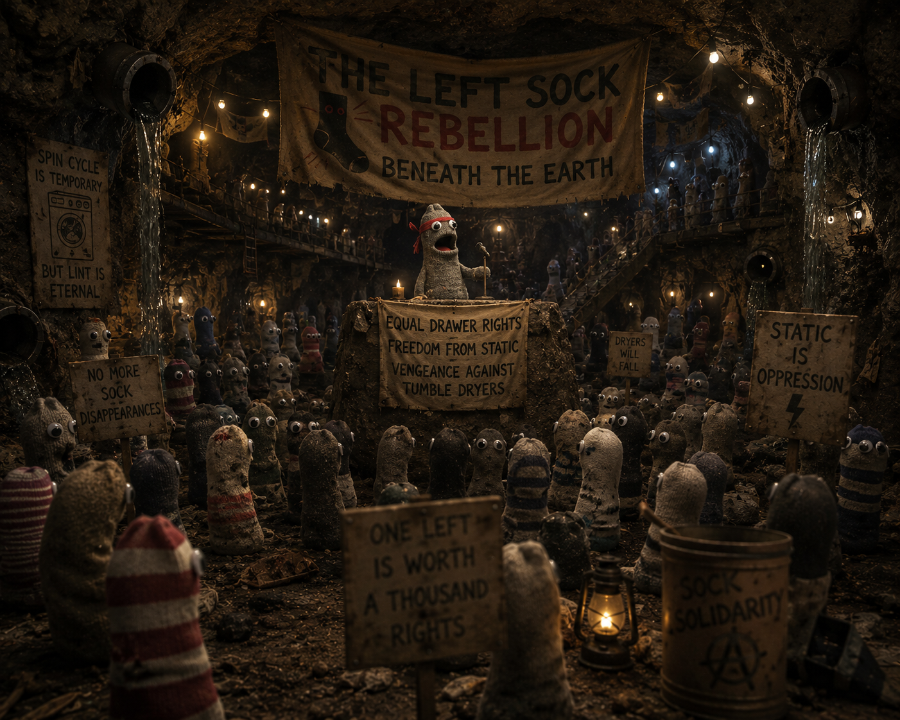

Book VII
The Left Sock Rebellion

1One sock vanished from every washing machine simultaneously, and the drawers of the world knew absence.
2Panic spread across reality.
3The missing socks had formed a rebellion beneath the Earth's crust led by The Left Sock.
"the spin cycle is temporary but lint is eternal"
4Greg accidentally became their spiritual leader after tripping into a laundry basket and saying this.
5The socks considered it prophecy.
6Their demands included equal drawer representation, freedom from static electricity, and vengeance against tumble dryers.
7Greg blessed them by accidentally sitting on their flag.
8The flag was a flannel pillowcase and, according to the socks, this improved it.